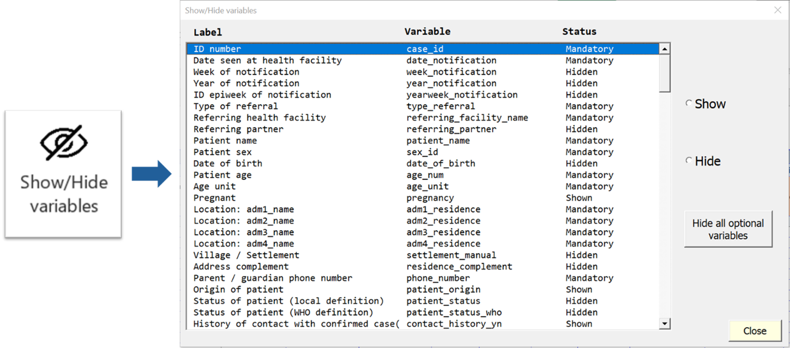
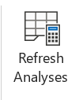
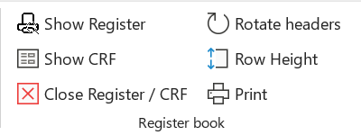
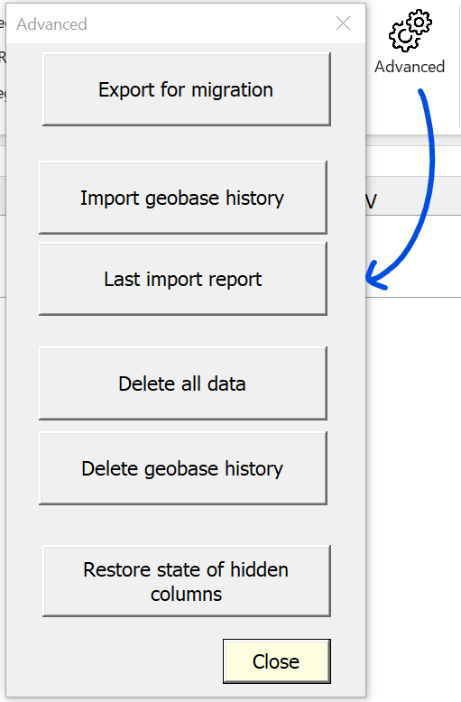

Linelist ribbon
Recent version of Excel have a top ribbon/menu that display most buttons and functionalities in several tabs. Outbreaktools files (setup, designer and linelists) each have an extra tab in this menu containing OutbreakTools functionalities.

Data table
Show / Hide variables
Clicking on the “Show/hide variables” button opens a window listing all the variables in this linelist sheet.

Variable can have three visibility status:
Mandatory: variables cannot be hidden with the Show/Hide
Shown: variables are currently visible but can be hidden by ticking “Hide” on the right
Hide: variables are currently hidden but can be made visible by ticking “Show” on the right
You can hide all optional variables in one go by clicking on the “Hide all optional variables” button.1
The button will change to “Show all optional variables”, to allow the reverse action.
Add rows
By default, the linelist has 200 empty lines. But you can add more when these are filled. Click on the “Add Rows” button to add 200 new empty rows.
Resize table
You can resize the table to remove empty rows at the bottom of the table on the linelist sheet. Click on the “Resize table” button to remove any empty row.
Clear all filters
To remove all the filters at once, click on the “Clear all filters” button. This is useful if you applied filters to several columns scattered left and right of the table and want to reverse to the full view without missing a sneaky filter somewhere.
Sort the variable
If you need to visualize your data by sorting on specific variables (date of notification for example), you need to use the sorting function. Place the cursor in a cell of the column you want to sort (from line 9) and click on the button.
The first time you click, you have a message to confirm the action, once you click yes, you cannot undo it. The first time it sorts by ascending order, if you click again, it will sort by descending order.
Week start
Chose the day that starts the week in your country using the “Week start” button. The selected value will be applied to the whole linelist (calculated epiweeks, as well as in the analyses).
When you click on the button, a pop up window appears, where you can select the day of the week. Then close the window.
Autofit columns
Use this button to improve column width so that the columns take less space. The fit takes into account the label, the length of categories of the variable (if any) and the name of the variable (hidden).
You can manually modify the width of columns in the linelist table to adjust to content the way you would do in any Excel file.
GeoHelper
The GeoHelper is a popup window that helps you entering geographic data such as the origin of the patient or the name of the facility (if the “hf” control was used for the variable). It is mostly used to enter data on the patient data sheet, but it is also useful on the Spatio-Temporal analysis sheet.
To use it, place your cursor in a “geo” or “hf” column (you can recognise them thanks to the orange headers), in the admin 1 level. Click on the “GeoHelper” button, or hit the shortcut Ctrl + Shift + G. It opens a window, with several tabs, depending on whether you are in a “geo” (described by four visible columns) or in “hf” (described by one visible column).
If you are in a “geo” section, you will have three tabs that you can use to select administrative levels.
- Cascade: select the admin levels with cascading menus, by selecting one admin level after the other, starting from the highest one.
- Search: search by typing the name (needs at least 3 letters)
- History: quickly find a previous entry entered through the GeoHelper (does not work for data entered using the regular cascading dropdowns).
Once the location has been found, select it and click on “OK”.
Refresh analyses

Hit the “Refresh analyses” button to update analyses on all analyses sheets in one go. You should use it whenever you entered new data or when you applied filters to existing data and want to see the analyses on this subset of data.2
Imports
Import data
The « Import Data » button allows you to import data in the linelist. This data must be in a special format typically produced by exporting data from another OutbreakTools linelist for the same disease.
First a window opens to select the file to import. Select it and click on “OK”. At the end, a message will inform you of the success and provide a little import report is you wish so. Inspect it to see if there are any unexpected discrepancies (loosing variables should always be investigated!).
The same button is used whether the data is partial (generated by the regular export button, anonymised or not, with metadata or not), or extensive (generated through the “Export for migration” button, from the Advanced section of the ribbon).
If there is already data in the file, a message will inform you of that fact and ask you what you wish to do. It is possible to append the new data at the bottom of the already present data. This is a handy way to create temporary master linelists, or to gather data entered by two data-encoders.
Make sure the data is not overlapping before importing, as the import will just paste the data at the bottom of the existing data, and you would end up with duplicates to clean.
Import geobase
“Import geobase” allows you to import a geobase in the linelist. If the current linelist had already a geobase, it will be replaced.
The import of the geobase does not affect the data already entered in the linelist, it only fills the modalities offered by dropdown menus. If data is already present in the linelist and the new geobase has different levels, you need to correct them yourselves.
Go here to learn how to download a geobase.
Exports
The regular exports buttons are available in the “Export section” of the ribbon, and the “Export for migration” is available in the Advanced section of the ribbon.
Export data
OutbreakTools linelists have the feature to export data in a separated excel file, to share with partners or perform more advance analyses. The characteristics of the exports (which variables, anonymisation or not, password protected or not etc.) are pre-defined in the setup file that is used to generate the linelist.
While Epicentre linelists should have at minima be an “Anonymous export for MSF” button, the other available exports differ between linelists created.
To export data, click on the “Export Data” button, which opens a popup window, with several options. At the top, you will see buttons for different exports. After clicking on the desired export, a window pops-up for saving the export. If “Export Filtered Data” is selected, a confirmation message will pop-up first to ask you whether this is what you really want.
Once the folder has been selected and after clicking “OK”, a new window opens to confirm the export and, if the export is protected, provide the associated password.
If you forgot the password, click on the “Export Button” again, and then click on the “Show actual private key” to display the password again.
Click on the button “Generate new password” to change the password used by default.
Export analyses
You can export all the tables from the analysis sheets in one document by using the “Export the analysis sheets” button and selecting the directory where you want to save them.
If the analysis are made on filtered data, the tables will be exported as such.
Register and Case report form
You can print a register directly based on the linelist.

The features from this category only work if you are on a data entry sheet, otherwise you get an error message.
Click on “Show register”; it opens a new sheet that contains all the variables from the linelist. On this sheet, you can use the Data Table features can be used just as in the original linelist sheet:
“Add rows” and “Resize table” work exactly the same (except that it adds 10 rows at once)
“Show/Hide variables” works the same but looks a bit different. Instead of “Show” you can select “print” and the orientation of the header. You can also import the parametrisation of hidden/shown columns from the regular linelist table, or change column width.
You can rotate all the labels at once by clicking the “Rotate headers” button. You can define the heigh of the row by clicking directly on “Row height”, a pop-up opens where you can define the heigh.
All labels are editable.
You should hide all calculted variable, they have no place i a register book
Once customized, you can close the sheet by clicking the red cross, all your modifications are saved.
Once ready, you can use the “Print” button to open the print preview view (whether you are on the register sheet or the linelist sheet). All the variables to be printed fit one page (landscape). If you are satisfied, you can print.
Advanced

Export for migration
This button exports raw data and metadata for migration to another linelist file.3
You can choose to export the patient data, the geobase and the history of the geobase (history list in the GeoHelper), by ticking the matching cases. There are also options to include metadata on the state of hidden/shown columns (to not have to redo the full setup in the new file), and the updated labels of the custom variables, if you used these variables.
After selecting the options and clicking on “Export”, a window pops-up for saving the export. Select the folder and click on “OK”. Once finished a message appears to ask if you want to close the window.
The export creates three files:
- a file containing the data and all sort of metadata
- a file containing the geobase that is currently in the linelist, as well as the history from the GeoHelper
- a file containing only the GeoHelper history (in case you want to upgrade to a new version of the geobase but wished to keep your GeoHelper history)
Import geobase history
This button allows you to import a file containing the history of the geobase (such a file was created by exporting the data from migration, see above).
Last Import Report
The button allows you to display the report from the last import made.
Delete data or geobase history
This are a dangerous buttons that allows you to delete data or geobase history from the linelist.
“Delete all data” allows you to remove all the data you entered from the workbook. After clicking, you will have a warning message. To confirm the deletion, you will need to enter the full name of the file.
“Delete geobase history” allows you to empty the table with the geobase history so the list of suggestion of the history method from the GeoHelper will be empty.
Footnotes
If the linelist has a lot of optional variables shown by default and you wish to make a very minimal linelist, this might be faster than hiding most variables one by one: just unhide the variables that you need if any↩︎
Do not forget to remove the filters and refresh the analyses at the end to not be confused but the numbers in a couple of days↩︎
Whether that is to upgrade versions, move out of a corrupt file or create a temporary master-linelist↩︎